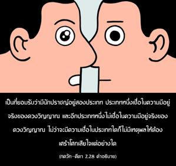
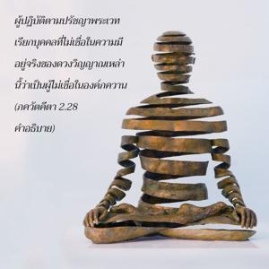
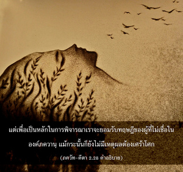
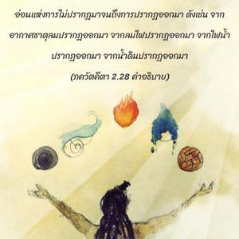

สิ่งมีชีวิตทั้งหมดที่ถูกสร้างขึ้นมา ไม่ปรากฏในช่วงต้น ปรากฏในช่วงกลาง และไม่ปรากฏอีกครั้งเมื่อถูกทำลายลง ดังนั้น จึงไม่มีความจำเป็นต้องเศร้าโศกเสียใจ




เป็นที่ยอมรับว่ามีนักปราชญ์อยู่สองประเภท ประเภทหนึ่งเชื่อในความมีอยู่จริงของดวงวิญญาณ และอีกประเภทหนึ่งไม่เชื่อในความมีอยู่จริงของดวงวิญญาณ ไม่ว่าจะมีความเชื่อแบบไหนก็ไม่มีเหตุผลที่ต้องเศร้าโศกแต่อย่างใด ผู้ปฏิบัติตามปรัชญาพระเวทจะเรียกบุคคลที่ไม่เชื่อในความมีอยู่จริงของดวงวิญญาณเหล่านี้ว่าเป็นผู้ไม่เชื่อในองค์ภควานฺ แต่เพื่อเป็นหลักในการพิจารณาเราจะยอมรับทฤษฎีของผู้ที่ไม่เชื่อในองค์ภควานฺ ถึงกระนั้นก็ยังไม่มีเหตุผลต้องเศร้าโศก ถ้าเราแยกความมีอยู่ของดวงวิญญาณออกต่างหากจะเห็นว่าธาตุวัตถุต่างๆ ไม่ได้ปรากฏก่อนการสร้าง จากระยะที่ละเอียดอ่อนแห่งการไม่ปรากฏมาจนถึงการปรากฏออกมา ดังเช่นจากอากาศธาตุ ลมปรากฏออกมา, จากลม ไฟปรากฏออกมา, จากไฟ น้ำปรากฏออกมา, จากน้ำ ดินปรากฏออกมา และจากดิน สิ่งต่างๆ มากมายหลากหลายปรากฏออกมา ตัวอย่างเช่น ตึกสูงระฟ้าปรากฏขึ้นมาจากดินเมื่อถูกรื้อถอนทำลายลง การปรากฏก็จะกลายเป็นการไม่ปรากฏอีกครั้งหนึ่ง และในขั้นสุดท้ายยังคงเป็นอะตอมอยู่ กฎแห่งการอนุรักษ์พลังงานยังคงอยู่ ข้อแตกต่างคือ ตามกาลเวลาสิ่งต่างๆ จะปรากฏและไม่ปรากฏ แล้วอะไรเป็นเหตุแห่งความเศร้าโศก ไม่ว่าจะปรากฏหรือไม่ปรากฏออกมา อย่างไรก็ดี แม้อยู่ในสภาวะที่ไม่ปรากฏก็ไม่มีอะไรสูญเสียทั้งในตอนต้นและตอนปลาย ธาตุต่างๆ ทั้งหมดก็ไม่ปรากฏออกมา และในช่วงกลางเท่านั้นที่จะปรากฏออกมา ซึ่งมิได้ทำให้มีข้อแตกต่างกันเลย
หากว่าเรายอมรับข้อสรุปของพระเวท ดังที่ได้กล่าวไว้ใน ภควัท-คีตา ว่าร่างกายวัตถุเหล่านี้เสื่อมสลายตามกาลเวลา (อนฺตวนฺต อิเม เทหาห์ ) แต่ว่าดวงวิญญาณเป็นอมตะ (นิตฺยโสฺยกฺตาห์ ศรีริณห์ ) ฉะนั้น เราต้องจำไว้เสมอว่าร่างกายนี้เปรียบเสมือนเสื้อผ้า แล้วจะไปโศกเศร้ากับการเปลี่ยนเสื้อผ้าทำไม ร่างกายวัตถุนั้นไม่ได้มีอยู่จริงในความสัมพันธ์กับดวงวิญญาณอมตะ มันคล้ายกับความฝัน ในฝันอาจคิดว่าเราบินอยู่บนท้องฟ้าหรือนั่งอยู่บนราชรถเยี่ยง กฺษตฺริย แต่เมื่อตื่นขึ้นมาจะพบว่าเราไม่ได้อยู่ทั้งในท้องฟ้าหรือบนราชรถ ปรัชญาพระเวทส่งเสริมความรู้แจ้งแห่งตนบนพื้นฐานที่ว่าร่างกายวัตถุไม่มีอยู่จริง ดังนั้น ไม่ว่าในกรณีใด ไม่ว่าเราจะเชื่อในความมีอยู่จริงของดวงวิญญาณ หรือเราจะไม่เชื่อในความมีอยู่ของดวงวิญญาณก็ไม่มีเหตุผลที่จะต้องเศร้าโศกเสียใจในการสูญเสียร่างกาย